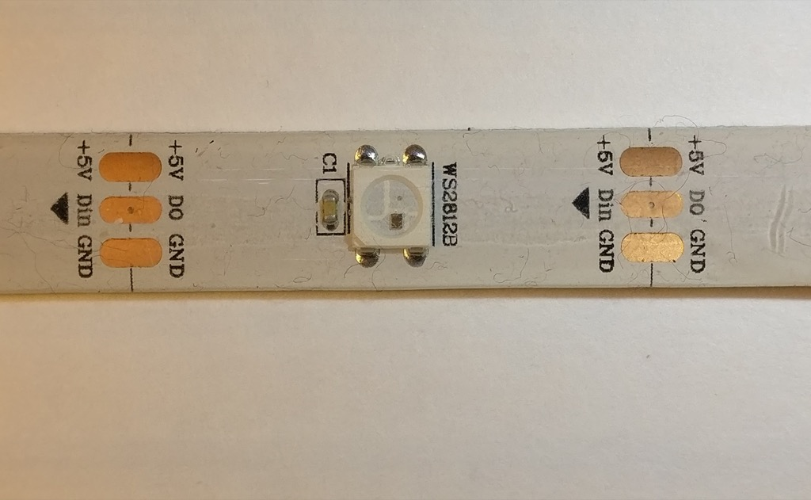
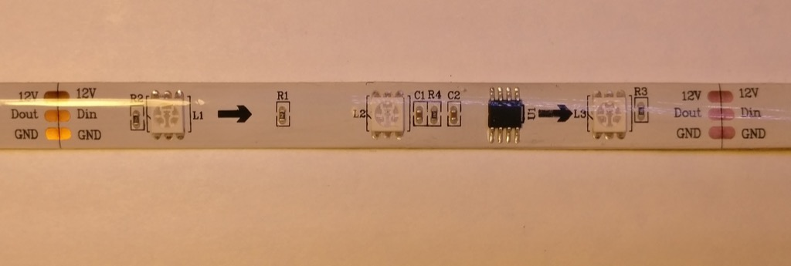
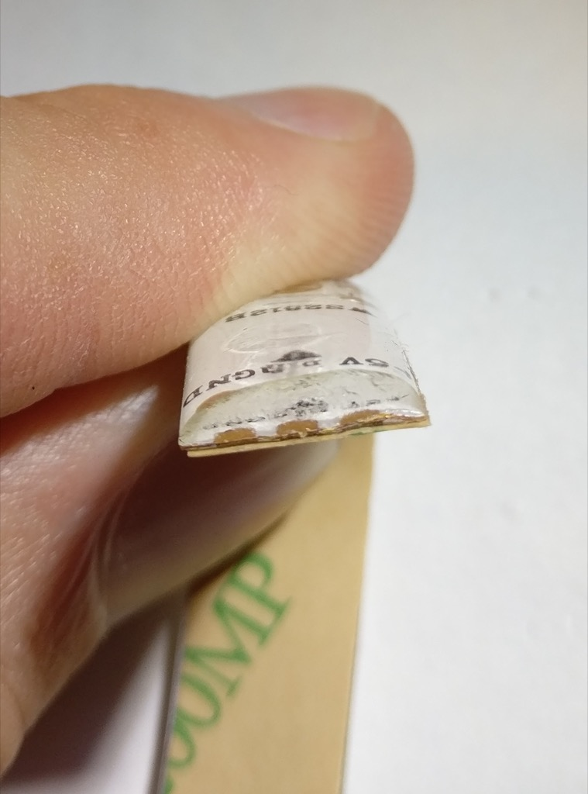
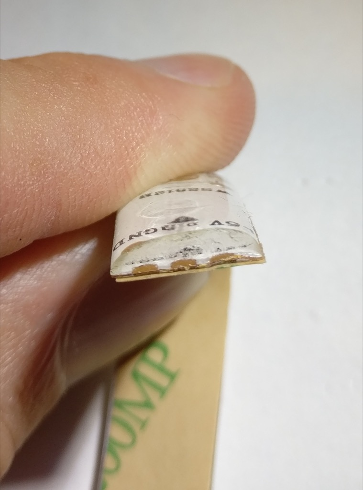
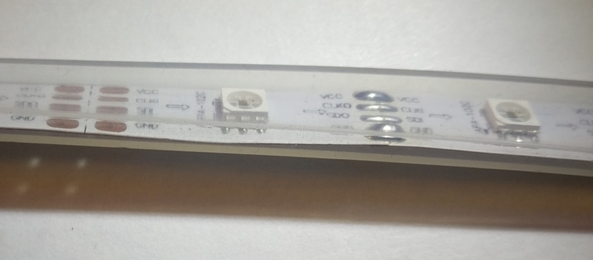
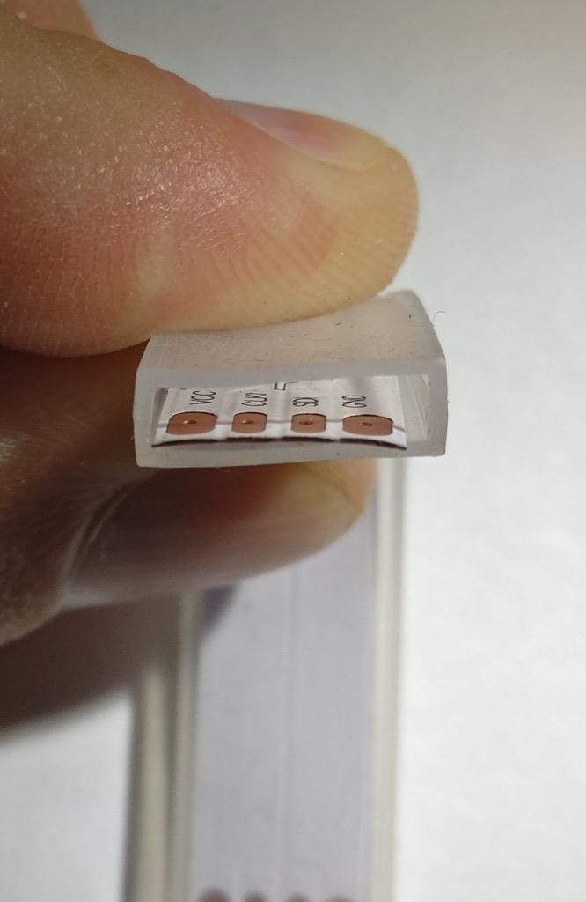
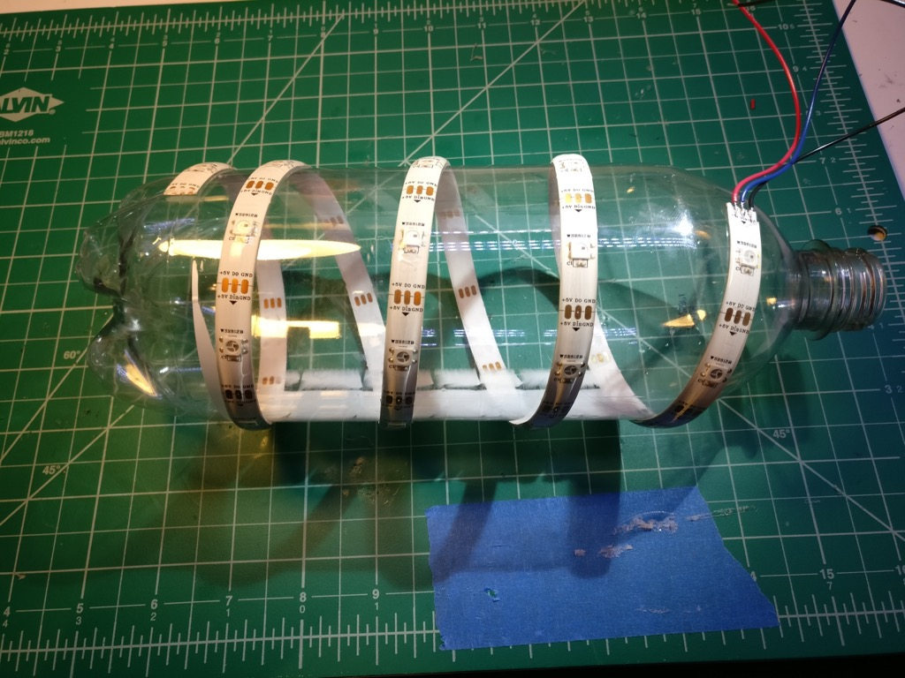

An LED Pixel Selection Guide
What follows is an overview of several types of LED pixel strip, which by totally random chance happen to be the types I use frequently. This is by no means comprehensive.
WS2801

- 4 wire
- 5 volts
- 25 MHz data rate
- 2.5 KHz PWM refresh
The WS2801 has a moderate PWM refresh and a high data rate. The PWM frequency is fast enough that temporal dithering (such as FastLED or Fadecandy uses) will yield decent results. The 25 MHz data rate is blazing fast, though I’ve personally never run them this fast so I can’t confirm. I have run 2 MHz or so, which is plenty fast enough for many applications.
This is an older design with an external chip controlling the LED. This creates additional weak points when bending the strip, so these are among the least durable type of pixel in my arsenal. I wouldn’t recommend these for costume work.
APA102

- 4 wire
- 5 volts
- >4 MHz data rate
- 19.2 KHz PWM refresh
This LED is awesome. Temporal dithering will look great, owing to the extremely high refresh rate. The 4 Mhz data rate is just the starting point, I’ve seen reports of 10 MHz and above (I just never need to go that fast). The controller is built in to the LED itself, so there are no external chips to create additional weak points.
There is a separate 31 step global brightness channel that operates independently of the RGB PWM circuit. Assuming your firmware supports it, this is an incredibly useful feature if you are making a project that will typically run at low brightness. Instead of dimming on the color channels, which reduces your maximum color depth, you can just lower the global brightness and still get your full 24 bit color. This is a huge difference considering that 50% intensity reduces your color depth by 8 fold: 16,777,216 color steps becomes 2,097,152. At 10% intensity you are down to around 15,625 steps. With the APA102, you can get to 3.2% intensity and still have all 16 million colors.
The datasheet on these is pretty threadbare, but the more info link below has some detailed information.
WS2812
{kind=link}
- 3 wire
- 5 volts
- 800 KHz data rate
- 400 Hz PWM refresh
These are cheap, which is probably their biggest selling point. They also only use 3 wires instead of 4, which makes wiring much easier. The drawback is requiring precise timing on the signal wire (since there is no separate clock signal). The 400 Hz PWM refresh is also extremely slow, so dithering will generally produce unsatisfactory results.
WS2811
{kind=link}
- 3 wire
- 5-12 volts depending on LED configuration
- 800 KHz data rate
- 400 Hz PWM refresh
These are really similar to the WS2812, in fact, they use the same protocol. The difference is the WS2811 uses an external driver chip and depending on the strip, can be powered from 12 volts. In the 5 volt case, each chip will drive a single LED. In the 12 volt case (pictured above), each chip drives 3 LEDs in series. This means that each “pixel” is actually 3 LEDs in a row. The signal wire can still run at 5 volts (even when the LEDs are powered with 12), though I’ve run mine at 12 volts through a series resistor with no problems (some of my controllers can output 12 volts on the signal line if the board is powered with 12 volts).
Analog/PWM

- 4 wire
- 12 volts
- PWM is however fast your controller can go
Analog strips are driving with 3 PWM channels, 1 each for red, green, and blue. The entire strip will be the same color. Power is 12 volts (typically, though 24 volt strips do exist). The color depth is dependent on your PWM controller. I have a design which is 16 bits, so I actually have 48 bit color resolution (which is overkill at maximum brightness, but means my color resolution is still excellent at <1% brightness).
While the addressable pixel strips are more popular, if you just need to produce a ton of light over a wide area at the same color, these are still a pretty good value.
Waterproofing
There’s two common types of waterproofing I’ve seen on pixel strips (not including the option of not-waterproof).
IP65
 

{kind=link}
IP65 is a silicone coating over the top of the LED strip. The adhesive backing is still present. Technically these are more water-resistant than water-proof, you probably wouldn’t want to submerge them since the backing of the strip is still exposed. Since the silicone is molded onto the top of the strip, it adds quite a bit of stiffness and greatly improves the durability of the strip. I use IP65 rated pixels for costuming for this reason.
IP67
 {kind=link}
{kind=link}
The IP67 pixels are completely enclosed in a silicone jacket. They are not physically attached to it, just contained within. Technically, this means they are fully waterproof and can be submerged. However, this comes with a few drawbacks. First, if there is any leak in the jacket, water can reach any part of the strip. Second, they don’t get the stiffness advantage of the IP65. For this reason, I think the IP65 is usually the better option.
Thoughts and opinions
Overall, the APA102 is my favorite. It does everything well, though it can be a little more expensive than the other types (in 2017 this seems to be coming down though). I use the extra dimming channel frequently for projects that don’t need to be super bright.
For projects that tend to run full brightness, I like the WS2812. They are extremely cheap, and losing that extra wire makes them a lot easier to work with.
As for waterproofing, I overwhelmingly prefer IP65. The only reason I have any IP67 at all is because I bought them by accident.
What LEDs do you use?
How to make a glow cloud
I made some glow clouds a few months ago, and people really loved them. I made another one today as a gift for a family member, and I decided it was time to share how I did it.
If you search for DIY glow clouds on the web, you’ll find a ton of variety on how to do this. I’m going to show you how I do it, feel free to be creative and adapt for your needs (which is what I did).
Here’s what we’ll be making:

And with the LEDs off:

The 3D printed stand is optional - you can mount it however you want. I have several hanging from the ceiling in my bedroom. This one is designed to stand on a table or countertop.
Things you need
- Paper lantern. I use the 12 inch size in this build. If you’re doing multicolor lighting, you want to get the white paper. You can find these on Amazon very cheaply.
- Hot glue gun.
- Polyfill stuffing. You can get this at any craft store.
- Plastic 32 oz bottle. Empty, obviously.
- Some LEDs. I’m using some leftover WS2812b LED strip. Mine have the silicone waterproofing, which as you’ll see later will be useful. Something like a Hue light bulb could work too. Just don’t use an incandescent bulb, or anything that gets hot! Glow clouds are extremely flammable!
- Some way to control your LEDs. For most, some kind of Arduino is the obvious choice here. I build my own controllers, so if you don’t recognize the board I’m using, that’s why. I’m assuming you have basic soldering and wiring tools, so I won’t list those here.
- DC power jack. You can find these on Amazon. They have screw connections, which makes them indispensable for doing little projects like this.
- Power supply. Again, Amazon is your friend here. I’m using a cheap 5V 2A power supply. It’s probably overkill for the 32 LEDs I have.
- The beverage of your choice. And music. You’re making art, have fun with this!
Print the stand
You can get my stand design on Thingiverse here.
I’m going to be honest with you, this is not the easiest print to do. It took me about five tries to get it to look good (and not fall apart). The orb at the top is particularly tricky. It’s also going to take awhile. Mine runs about six hours with a 0.6 mm layer height (I’m using an E3D V6 Volcano). If you’re using the more common 0.3 mm, it might take closer to a day. The design is in OpenSCAD, so feel free to tweak it. Good luck!
Here’s a photo of the stand and the adapter part:
{kind=link}
Make the cloud
First, you want to assemble your paper lantern:
{kind=link}
The metal wire thingy goes in the paper thingy:
{kind=link}
Now you get out your glue gun and polyfill, and just really go to town on this thing:

I think doing about a handful at a time is most effective.
{kind=link}
After you get the center of your handful of fluff glued down, check the edges and make sure they are secure too. It doesn’t need to be super strong, just enough so it’s not going to peel off too easily.

Keep adding fluff…
{kind=link}
… until you have a full cloud:

Revel in your accomplishment, and then proceed to phase 2.
Mount the LEDs
First, we’re going to wire up our LED strip. I’ve got some WS2812b laying around, so that’s what I’m using. The fact that they only have three wires instead of the usual four makes the wiring easier. This is the 30 LED per meter density, and I’ve got 32 LEDs in the strip.

I’m using the silicone jacketed kind, so I need to get part of that off so I can get to the wiring contacts. If you’re thinking of doing it like this:

Then STOP right now. Unless you are a black belt with a razor knife, you’re going to cut through the copper and ruin your LED strip. Instead, take a small flathead screwdriver and wiggle it gently between the silicone and the LED strip, like so:
{kind=link}
You should be able to peel up the end and then tear it off by hand:

So much easier, and it’s a lot harder to ruin your strip this way.
Now, attach your wiring to the LED strip. Six to eight inches will do. I recommend using flux and then pre-tinning the wiring and the pads on the strip before trying to solder them together. A little bit of preparation makes the overall process much smoother.

Ok, so next get your plastic bottle:
{kind=link}
And wrap your LED strip around it:
{kind=link}
The adhesive on most LED strip is terrible, so let’s add some hot glue to make sure it stays put. I added glue in two places near both ends of the strip. This way, if the glue on the very end comes loose somehow, you’ve got another blob of glue an inch away, which hopefully will act as a backup. Note that the bottle will probably deform a bit from the heat.
{kind=link}
Now, get a razor blade, and cut three sides of a rectangle in the side of the bottle near the LED wiring. This is so we can cram the electronics on the inside of the bottle.
{kind=link}
This is ultimately what we’re going for with the stand, adapter, and bottle (but don’t glue these together yet!):
{kind=link}
Power wiring
We need to run some wiring up the leg of the stand (the leg with the hole in it), and then out through the top, and finally through the adapter itself.
First, attach your wiring to the power jack. Again, tinning the leads is your friend here.

Now run the wiring up through the bottom of the leg, NOT through the hole!

Now finagle the power jack into the leg. This is a bit tricky with the support ring in the way, but it’s doable.

I plugged in the DC end of the power supply (with the brick itself unplugged) to help prevent the jack from wandering off.
{kind=link}
Run the wiring out through the top of the stand and through the adapter, like so:

If you put the adapter into the stand, it will look like this:

Now is a good time to plug in the power supply and check the voltage on the wiring so you don’t blow up your electronics, or realize your wiring is bad after you’ve glued everything together.
Connect the wiring to your electronics. Again, I make my own LED controllers, so your setup will probably look different here. Note the way the power wiring runs - through the neck of the bottle and then out through the rectangle flap we made.
{kind=link}
Now shove the electronics inside the bottle:

Very carefully hot glue the adapter to the neck of the bottle. Use as much glue as you can, this joint needs to be strong. Try real hard not to burn yourself while you do this, hot glue is HOT. You’ll need to hold the adapter and bottle together for several minutes until the glue sets.

You should end up with something like this:

Great, now do the same thing with the power jack. Be gentle with the stand, the plastic will soften from the heat of the glue and you don’t want to accidentally deform it.
{kind=link}
Now we have something like this:

That’s boring, let’s turn it on:
{kind=link}
Good job, that looks pretty cool. Now its time to take a short break, and get another beverage.
Putting it all together
We’re going to mount the bottle/LED assembly inside the cloud. First, pop off the metal wire thingy:

Very gently cram the bottle into the cloud. See how we’re putting the bottle in between the metal wire thingy, that’s why we want the silicone coated LED strip, otherwise you might end up with some short circuits.

Put the wire thingy back, and also check the top of the cloud to make sure everything is sitting correctly:

{kind=link}
Making sure the end of the bottle is pressed against the top of the cloud, tape the wire thingy to the adapter. It should be surprisingly stable.

Liberally coat the top of the cloud with hot glue to help secure the wire thing to the end of the bottle:

Let it cool a bit, then add more glue and another handful of fluff to complete the cloud:

Awesome!
{kind=link}
Note that we don’t glue the adapter into the stand. This way it comes apart in two pieces so it’s easier to pack if you need to move it.
Fire it up
{kind=link}
This is what the effect I use looks like:
Here’s the code I used to generate the effect. It’s written in a Python-based scripting language I made called FX Script. It’s probably adaptable to FastLED or something like that, but you’ll have to figure out how to do the smooth fades.
hue = Number()
cursor = Number()
def init():
pixels.sat = 1.0
pixels.val = 0.0
pixels.hs_fade = 4000
def loop():
if rand() > 20000:
return
pixels.v_fade = 3000
pixels.val = 0.0
pixel = Number()
pixel = rand(0, pixels.count)
pixels[pixel].hue = hue
pixels[pixel].v_fade = 100
pixels[pixel].val = 1.0
cursor += 1
if cursor >= pixels.count:
hue = rand()
cursor = 0
Hopefully that gives you some ideas at least. Now, go forth and make some clouds!
Memory alignment on ESP8266 - Exception(9)
This one was tough to track down, but extremely obvious once I figured it out. The ESP8266 has limitations on accessing data through a pointer. Namely, 32 bit accesses need to be aligned on a 32 bit boundary, and 16 bit boundaries for a 16 bit access.
void func( uint32_t *ptr ){
*ptr++;
}
If the lowest 2 bits of ptr (the actual address) are not zeroes, you get Exception (9). This is easy to do if you have packed structs:
typedef struct __attribute__((packed)){
uint8_t something;
uint32_t something_else;
} this_may_crash_t;
If you pass a pointer from something_else to func, the compiler won’t know the pointer is unaligned and it cannot do anything about it. So you need to manually make sure your access is aligned. Simple, right?
AVRDude on Windows 10
Getting AVRDude to recognize a JTAG mk 2 on Windows 10:
Go here
Install libusb-win32-devel-filter-1.2.6.0.exe
In the device filter set up, select the JTAG device. Done!
AVR Xmega USART TXD pin reset
I found some undocumented behavior on the AVR Xmega A4U USART, and a helpful link from someone else who had the same issue.
If you enable the USART and then disable it (TXEN bit), the TXD pin reverts to an input. If you want to re-enable the USART later, you need to reconfigure the PORT.DIR register.
Probably not many people will run in to this, but in case you’re doing something fancy with your USART, there you go.